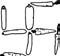

\1\2ğaç\3
Hitler vejetaryen miydi?

Hayır.
Bu bir espridir. Ellerinde on milyonların kanını taşıyan 20. yüzyılın en zalim diktatörü, et yemek için fazla pimpirikli, hassas ya da huysuzdu. Bu, mantıksız bir biçimde, Hitler’in vejetaryen olduğu iddiasını desteklemek için muntazaman öne sürülmüştür. Maalesef doğru değildir.
Diktatörü yakından tanıyanlar da dahil çeşitli biyografi yazarları onun Bavyera sosisi, (kendi aşçısının yaptığı) avcı böreği ve güvercin dolmasına ne kadar düşkün olduğunu yazmışlardır.
Fakat Hitler devamlı olarak gazdan muzdaripti. Bu nedenle de doktorları devamlı vejetaryen beslenme tavsiye ederlerdi (birçok vejetaryeni şaşırtacak bir çözüm). Ayrıca Hitler’e düzenli olarak, ezilmiş boğa testislerinden elde edilen yüksek proteinli serum veriliyordu. Bunun mantar ezmesi ya da fırında mercimekle yakından uzaktan alakası yoktur.
Konuşmalarında ya da yazılarında da ideolojik olarak vejetaryenliği desteklediğine dair bir kanıt yoktur ve subaylarından hiçbiri de vejetaryen değildir. Aslında vejetaryenleri de, Esperanto dilini konuşanlar, vicdani retçiler ve diğer nefret ettiği “enternasyonalistler” gibi suçlu ilan etmiş olması çok daha muhtemel görünmektedir.
Ateist de değildi. İşte Mein Kampf [Kavgam] (1925) kitabındaki muğlak olmayan ve eksiksiz sözlerinden onun ne olduğu: “Eminim ki ben Yaratıcımızın temsilcisi olarak hareket ediyorum. Yahudilere karşı savaşarak Tanrı’nın işini yerine getiriyorum.” Aynı tür kelimeleri 1938’de Reichstag’taki (Alman Millet Meclisi) konuşmasında da kullanacaktı.
Bundan üç yıl sonra General Gerhart Engel’e “Ben önceden olduğu gibi bir Katoliğim ve öyle de kalacağım” demiştir.
Nazi Almanyası “tanrısız” bir devlet olmak bir yana, Katolik Kilisesi’yle ateşli bir işbirliğine gitmiştir. Piyade askerleri, tokasında Gott mit uns (Tanrı bizim yanımızda) yazılı kemerler takardı ve askeri birliklerin ve teçhizatının kutsanması da sürekli ve yaygın bir uygulamaydı.